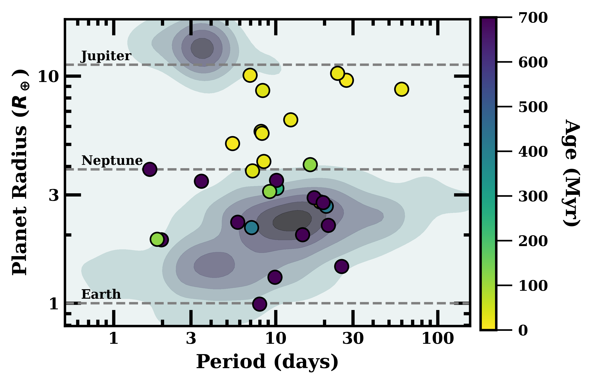

A critical question for exoplanet research is to understand the evolution of planetary atmospheres. We have been able to probe a transiting planet's atmosphere using transmission spectroscopy: when a planet crosses in front of its host star, the atmosphere of the planet can be used as a filter, absorbing in different wavelengths and resulting in different transit depths, depending on the planet’s chemical composition and physical structure. This technique has helped reveal the composition of many mature planetary atmospheres, but the number of young planets getting their atmosphere characterized remains limited.

My research aims to close this gap by targeting young planets (<1 Gyr) who are members of young clusters or associations, in which their age will be constrained. The plot on the right shows the contour of all planets from Kepler/K2 as a function of planet radius and orbital period. Young planets are plotted in circles colored by their age. The youngest planets (yellow) have a radii between Neptune and Jupiter, while no mature planets are located within this region, hinting that young planets must be born inflated and lose their atmospheres over time.
Young planets can provide a direct probe of the natal environment, which could be used to constrain a planet’s formation and migration history; while for mature planets, later-stage atmospheric evolution can alter primordial signatures.
My research aims to answer the following questions:
- What processes govern planetary evolution and formation?
- What are the physical, chemical, and optical properties of aerosols that persist and form in young planets?
- How does stellar surface inhomogenities impact a planet's transmission spectrum?